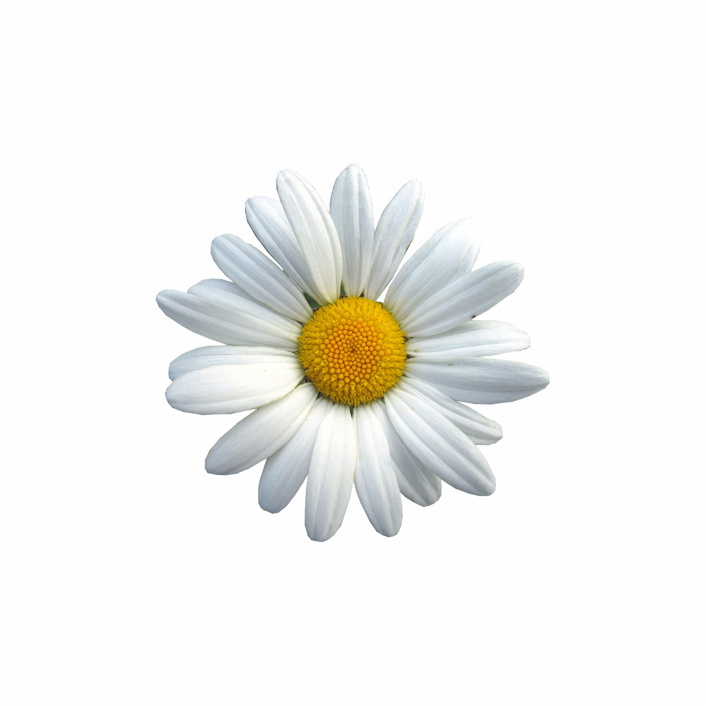

Magical Wands
Cast ethereal flowers, constellations & 3D light ribbons with your hands

Cast ethereal flowers, constellations & 3D light ribbons with your hands
Point index finger to plant flowers
Pinch fingers to spawn constellations
Draw luminous 3D light ribbons
Real-time MediaPipe hand tracking